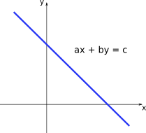
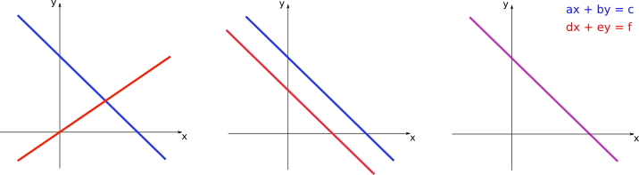

04 - From table arrangements to powerful tools#
Systems of linear equations#
As we saw previously, the equation \(ax + by = c\), with \(a\), \(b\), and \(c\) constants, defines a straight line on the \(xy\)-plane (note that it can also be written as \(y = mx + k\), \(m\) and \(k\) constants, by a suitable change of the coeffients). Since the coefficients do not depend on the variables \(x\) and \(y\), we call it a linear equation. A possible plot for this equation would be:
Note that all the points \((x,y)\) on the blue line satisfy or solve the lienar equation \(ax + by = c\).
Now consider that we have the following:
where \(a, b, c, d, e,\ \mbox{and}\ f\) are all constants.In this case we have a system of linear equations. Solving this system means to find all possible pairs \((x,y)\) that solve both equations simultaneously. For the previous system, we would have 3 options:
On the left panel, the two lines intersect at a single point. This point is the only one that solves both linear equations at the same time, and, therefore, constitutes the only solution for the system of two equations. On the central panel, the two lines are parallel, so there is no point of intersection. In this case there is no solution and the system of equations is said to be inconsistent. On the right panel, the two lines coincide. Thus, every point in those lines correspond to a possible solution for the system, so that it has infinite solutions.
Example
Given the system of linear equations
we can obtain the solution by isolating one of the variables in one of the equations and substituting on the other equation. Isolating \(x\) on the first equation gives:
Then by substituting on the second we have:
The value of \(x\) shall then be given by:
We see that the system has a single solution, given by \(\left(\displaystyle\frac{3}{2},1\right)\).
Example
Now consider the sytem
Isolating \(x\) on the first equation gives the same as before:
Then by substituting on the second we have:
which is just a trivial equation.
When we look at the equations in our system we see that the second equation is simply a constant multiplied by the first \((\text{Eqn.} 2) = -2\cdot(\text{Eqn.} 1)\), and thus they should represent the same straight line.
This system has then infinite solutions which are represented by the set of points \(\left(3 - \displaystyle\frac{3}{2}y,y\right)\)
Tip
Note that writing the solution as \(\left(3 - \displaystyle\frac{3}{2}y,y\right)\) represents an infinite set of points, since for every real value of \(y\) we would have a different ordered pair. This set of points forms the straight line corresponding to \(2x+3y = 6\).
Solving the system by this method of substitutions, however, can get much more complicated if we have more than two variables. For these cases, we need a simpler method.
One strategy is to find equivalent systems, which have the same solution as the original one, but are much easier to solve. We can apply the following set of operations without changing the solutions of a given system:
Multiplication of an entire row by a non-zero constant
Adding/subtracting one row to another
Rearranging the order of the rows
The examples below show this procedure applied to two systems.
Examples
(i) \(\begin{cases} 3x + 5y - z = 10 \\ 2x – y + 3z = 9 \\ 4x + 2y - 3z = -1 \end{cases}\)
See the solution on this video
(ii) \(\begin{cases} x - 3y + z = 4 \\ x – 2y + 3z = 6 \\ 2x - 6y + 2z = 8 \end{cases}\)
See the solution on this video
Note that by applying the rules of matrix multiplication, the system (ii) can also be written in the form:
where \(A\) is the matrix of coefficients and \(\mathbf{x}\) is the vector of variables.
Tip
We will be using the common notation of uppercase letters (\(A\)) to represent matrices and lowercase bold letters (\(\mathbf{x}\)) to represent vectors.
In general, the system with \(n\) variables \(\{x_1, x_2, \ldots, x_n \}\) and \(m\) equations can be written as
can be written as \(A\mathbf{x}=\mathbf{b}\), where
and
The matrix \(A\) has size \(m \times n\) (since the number of equations can, in principle, be different from the number of variables), while the vectors \(\mathbf{x}\) and \(\mathbf{b}\) have sizes \(n \times 1\) and \(m \times 1\), respectively.
Matrix operations#
Let us quickly remind the basic operations that can be performed with matrices. If \(A\) and \(B\) are both matrices of size \(m \times n\) (\(m\) rows and \(n\) columns), we have:
\(A=B\ \) if and only if \(a_{ij} = b_{ij}\) for every \(1 \le i \le m, 1 \le j \le n\) (elements at the same position have to be equal).
\(C = A + B\) is the matrix for which \(c_{ij} = a_{ij} + b_{ij}\) (sum is performed summing the elements at the same position)
If \(k \in \rm I\!R\) than \(kA\) is the \(m \times n\) matrix with elements \(ka_{ij}\)
The following properties are valid:
\[\begin{split}\begin{align} A+B &= B+A \\ (A+B)+C &= A+(B+C) \\ A + 0 &= A\ (0\ \mbox{here represents the matrix with null elements}) \end{align}\end{split}\]Example
If \(A=\begin{pmatrix} 1 & 0 \\ -1 & 2 \end{pmatrix}\) and \(B=\begin{pmatrix} 2 & 3 \\ -1 & 1 \end{pmatrix}\), then:
\[\begin{split}C = 2A+B = \begin{pmatrix} 2 & 0 \\ -2 & 4 \end{pmatrix} + \begin{pmatrix} 2 & 3 \\ -1 & 1 \end{pmatrix} = \begin{pmatrix} 4 & 3 \\ -3 & 5 \end{pmatrix}\end{split}\]If \(A\) is the \(m \times n\) matrix with elements \(a_{ij}\), the transpose of \(A\) (denoted by \(A'\)) is the \(n \times m\) matrix with elements \(a_{ij}' = a_{ji}\).
Example
\[\begin{split}A=\begin{pmatrix} 1 & 2 & 3 \\ 4 & 5 & 6 \end{pmatrix} \longrightarrow A'=\begin{pmatrix} 1 & 4 \\ 2 & 5 \\ 3 & 6 \end{pmatrix}\end{split}\]\[\begin{split}B=\begin{pmatrix} 1 & 2 \end{pmatrix} \longrightarrow B' = \begin{pmatrix} 1 \\ 2 \end{pmatrix}\end{split}\](Matrix multiplication) Consider now that \(A\) and \(B\) are matrices with sizes \(m \times l\) and \(l \times n\) (number of columns of \(A\) is equal to the number of rows of \(B\)). Then we can define \(C = AB\) as the \(m \times n\) matrix with elements \(c_{ij}\) formed by multiplying every element of the \(i\)-th row of \(A\) with the corresponding element of the \(j\)-th column of \(B\).
Example
If \(A=\begin{pmatrix} 1 & 2 \\ -1 & 0 \end{pmatrix}\) and \(B=\begin{pmatrix} 1 & 2 & 3 \\ 0 & -1 & 4 \end{pmatrix}\), then:
\[\begin{split}C = AB = \begin{pmatrix} 1 & 0 & 11 \\ -1 & -2 & -3 \end{pmatrix}.\end{split}\]Note that the matrix \(BA\) cannot be defined here since the number of columns of \(B\) is different from the number of rows of \(A\).
Warning
If matrices \(A\) and \(B\) are square matrices (same number of rows and columns) then we can define both \(AB\) and \(BA\). But, in general, we cannot assume that \(AB=BA\). For example, if \(A=\begin{pmatrix} 2 & -1 \\ 4 & -2 \end{pmatrix}\) and \(B=\begin{pmatrix} 1 & -1 \\ 2 & -2 \end{pmatrix}\), then:
\[\begin{split}AB = \begin{pmatrix} 0 & 0 \\ 0 & 0 \end{pmatrix} \quad and \quad BA = \begin{pmatrix} -2 & 1 \\ -4 & 2 \end{pmatrix}\end{split}\]For matrix multiplication, the following properties are valid:
\[\begin{split}\begin{align} (A+B)C&=AC+BC \\ A(B+C)&=AB+AC \\ (AB)C &= A(BC) \\ A0 &= 0A = 0 \end{align}\end{split}\]We can also define powers of \(A\). If \(k\) is a positive integer:
\[A^k = A^{k-1}A = AA^{k-1} = A\cdot A\cdot A \cdots A\ (\mbox{product of}\ k\ \mbox{matrices})\]
Inverse matrix#
Suppose that \(A\) is a \(n \times n\) matrix. If there exists a \(n \times n\) matrix \(B\) so that
where \(I=\begin{pmatrix} 1 & 0 & \cdots & 0 \\ 0 & 1 & \cdots & 0 \\ \vdots & & \ddots & \vdots \\ 0 & 0 & \cdots & 1 \end{pmatrix}\) is the \(n \times n\) identity matrix (with elements \(1\) on the main diagonal and \(0\) otherwise).
In this case we call the matrix \(B\) the inverse of \(A\) and denote \(B=A^{-1}\). If \(A\) has an inverse than it is called invertible or non-singular. If it does not have an inverse, \(A\) is singular.
Finding the inverse of \(A\) automatically gives us the solution to the system of linear equations \(A\mathbf x = \mathbf x\)
Finding ways of inverting matrices is therefore needed for a wide range of applications. A whole research field is dealing with optimising matrix inversions.
Example
To find the inverse of matrix \(A= \begin{pmatrix} 2 & 5 \\ 1 & 3 \end{pmatrix}\), we have to find the matrix \(B = \begin{pmatrix} b_{11} & b_{12} \\ b_{21} & b_{22} \end{pmatrix}\) so that
Thus
which leads to two systems of equations:
The solutions of these two systems, leads to \(B= \begin{pmatrix} 3 & -5 \\ -1 & 2 \end{pmatrix}\)
Determinant#
If \(A = \begin{pmatrix} a_{11} & a_{12} \\ a_{21} & a_{22} \end{pmatrix}\) then the expression:
given by the product of the elements on the main diagonal minus the product of the elements on secondary diagonal. The term \(\mbox{det}A\) is called the determinant of \(A\). The determinant can be calculated for matrices of any size, but the expression gets increasingly more complicated for larger matrices.
The determinant establishes a clear criterium for the existence of \(A^{-1}\). The matrix \(A\) will be invertible if and only if \(\mbox{det}A \ne 0\).
Note
The previous criterium has an important implication. Consider the system of linear equations defined by \(A\mathbf{x}=\mathbf{b}\) with equal number of equations and variables. If \(\mbox{det}A \ne 0\) then the inverse of \(A\) exists. Thus, if we multiply \(A^{-1}\) to the left of each side of the equation defining the linear system, we have:
which means that if \(\mbox{det}A \ne 0\) the system will have a single solution with the variables assuming the values \(\mathbf{x} = A^{-1}\mathbf{b}\).
Structured models#
In the models we have seen until now, all the individuals in a given population are identical. However, real populations have importance differences between individuals according to their life stages. For example, some insects have stages of eggs, larvae, pupae, and adults, while many plants pass through stages of seeds, seedlings, saplings, and mature individuals. Thus, understanding the differences in the dynamics of each life stage is important to add realism to our models (especially in applied models, such as pest control or harvesting management).
Suppose our population is composed by two classes: immature and mature individuals. Let us assume non-overlapping breeding seasons and that the timescales for reproduction and maturation are similar. Thus, time can be counted in discrete steps corresponding to this reproduction/maturation interval. At time \(t\) we have \(X_t\) immature individuals and \(Y_t\) mature individuals. Immature individuals survive until maturity with a probability \(p\), while mature individuals reproduce and generate, on average, \(m\) immature individuals for the next generation. Mature individuals die after reproduction. With these assumptions, we can calculate the sizes of each population class on the step \(t+1\) as:
See that now we have a model with two equations describing the variable class sizes in our population. Moreover, the dynamics of each class depends on the other, so that we have a system of coupled difference equations.
Interestingly, we can also write this system in matrix form, as:
where the sum of the components of the population vector \(\mathbf{n_{t}}\), gives the total population (immature plus mature individuals) at time \(t\): \(N_t = X_t + Y_t\). The matrix \(P=\begin{pmatrix} 0 & m \\ p & 0 \end{pmatrix}\) is called projection matrix or Leslie matrix. Multiplying matrix \(P\) by the population vector at time \(t\), \(\mathbf{n_{t}}\), we can project the next population size at time \(t+1\). Thus, from an initial population state, say \(\mathbf{n_{0}}\), the projection matrix governs the dynamics of the model.
This model can be easily generalised for a larger number of age classes. Suppose we now have \(q+1\) classes, \(X_0, X_1, X_2, \ldots, X_q\), from the youngest (meaningful) age \(X_0\) until the oldest age \(X_q\). At each time step \(t\), individuals from class \(X_i\) have a chance of surviving to the next age class \(X_{i+1}\), with probability \(p_{i+1\ i}\) (imagine an arrow for direction of age class progession \(p_{i+1\leftarrow i}\). We are going to omit the arrow for simplicity). Additionally, suppose that each age class \(X_i\) excluding the youngest, will, in principle, be able to reproduce, with average fecundity \(m_i\) generating new individuals for class \(X_0\). Thus, with the age class sizes at time \(t\), and the parameters for survival probabilities and average fecundities, we have:
This can also be written in matrix form as:
The generalised projection matrix \(P\) has then all the surviving probabilities just below the main diagonal, and the fecundities for each class in its \(0\)-th row.
Note
Two important differences here. First, the rows and columns for the matrix are indexed starting from \(0\) until \(q\), not starting from \(1\) as usual. Second, the time steps are written in parentheses for each age class, instead of a subscript as we have seen before for other population models, so that it does not conflict with the index for the age classes (going from \(0\) to \(q\)).
Example
Consider a population with three age classes \(X_0, X_1,\mbox{ and}\ X_2\), and the following projection matrix
If the population starts with \(10\) individuals in the oldest category at time \(t=0\), the population vector at time \(t=1\) will be:
The population age distribution at each time step will then be given be the successive application of the matrix \(P\) to the previous population distribution. For the first 10 time steps we have:
Two important things are worth noting here. First, the total population size (sum accros all age classes), follows the sequence \(N_t = \left\{ 10,100,50,260,225,700,822,1975,2756,5759,\ldots \right \}\). The reproduction process does not always lead to increasing population sizes in the beginning, but is subject to size fluctuations due to the demographic distribution of this population. After a few steps increases in population size become more consistent. Second, as the population size continues to increase, the population age distribution tends to a given proportion of the population classes given by: \(X_0 \approx 76\%, X_1 \approx 22\%, \mbox{and}\ X_2 \approx 2\%\).
Now consider that, instead of \(10\) individuals in the oldest class, we initiate the population with the following distribution \(\mathbf{n_{0}} = \begin{pmatrix} 7.6 \\ 2.2 \\ 0.2 \end{pmatrix}\). The population progression by successive application of the projection matrix will be
You can check that although each age cathegory is increasing, the percentage contribution of each class to the total population remains nearly constant. To this distribution of classes we give the name of stable age distribution.
Moreover, at each time step, each age class increases with approximately the same factor in relation to the previous step, around \(\lambda = 1.75\). If for each age class \(X_i(t+1) = \lambda X_i(t)\) is valid,then we have:
so that we recover the usual model for exponential growth for the total population size \(N_{t+1} = \lambda N_t\).